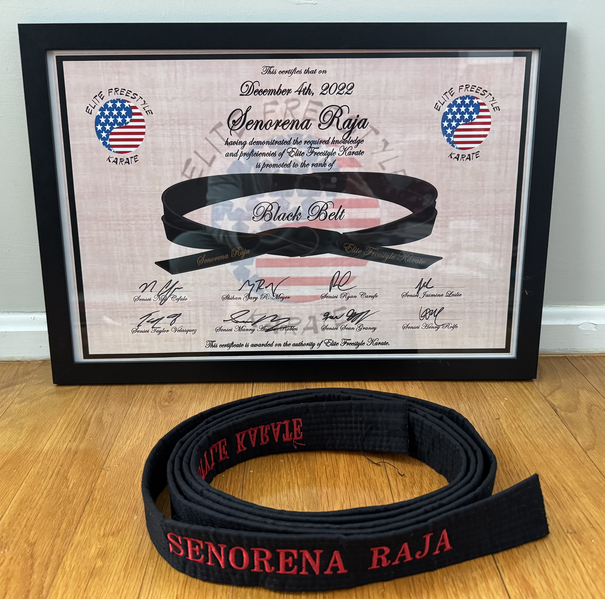
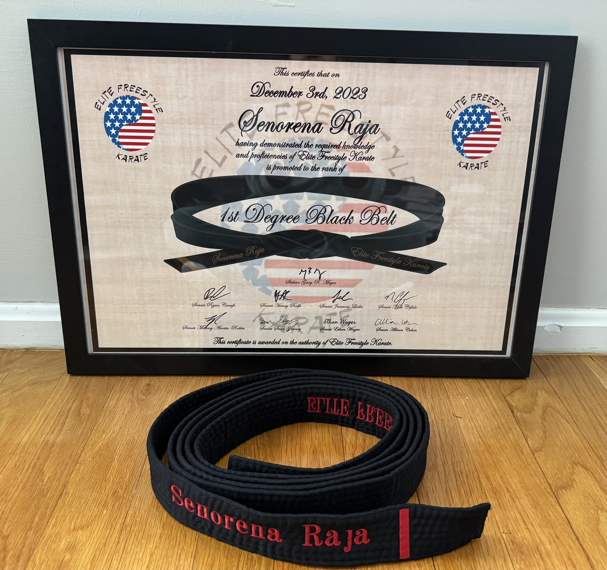
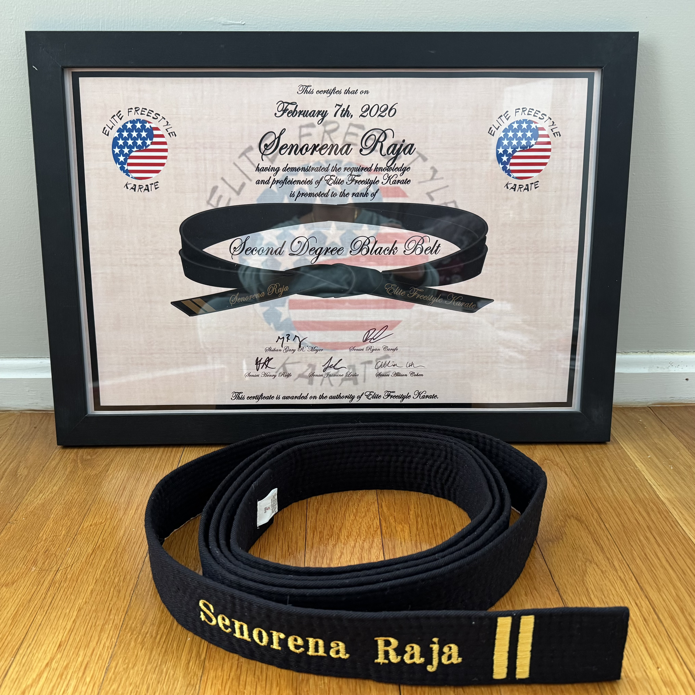

Extracurriculars

There are so many things that karate has taught me a lot in life like tenacity, courage, and many more skill sets that I believe are very essential in life. By the time I was a yellow-belt, going to karate was something I looked forward to everyday. I enjoyed learning about the different punches and kicks we did. Karate was also pretty hard at the time, it pushed me a lot by allowing me to step out of my comfort zone and persevere more.
Around the time I was an orange-belt, I realized that karate is more than just defense and tactics, it’s also about respect and empathy, and helping others.
The 2020 tournament rolled around when I had just gotten my blue-belt, but sadly, it had to be canceled because of COVID. From that day on up until I got my purple-belt, most of the karate classes I had attended were held online.
When I had gotten my purple-redbelt I started taking classes at Bedford because most dojos were closed still and Bedford was the nearest dojo to us that was doing classes in-person classes outdoors so even after all the dojos had opened again, I continued doing karate in Bedford (And I still am till this very day).
I have learned sooo much more about karate and myself after I became a brown belt; For starters, I did things I thought I’d never do in my life like running a 5k or competing in a tournament. I also learned that karate is about not giving up and doing good things like helping your loved ones out and being a good person in general. I also got to do 10 hours of community service at our local community farm (Lexington Community Farm) where we helped around the farm like pulling out weeds from crops and cleaning out greenhouses; It was all hard work but it made me feel good that I got to help out in the end. Karate has inspired me to push myself harder and be the best version of myself. Joining EFK was a really good decision in my life and I’m proud of all the techniques, skills, lessons and experiences I got to learn.

Normally, people (including myself at one point), would assume that karate is all about self defense and moves but during my time as a blackbelt, I came to a deeper understanding of why karate is so much more than that; It actually involves a lot of respect for yourself and those around you, and being able to connect with others on a higher empathetic level. Whenever I’m sparring or grappling, I always aim to bring out the best version of myself, whether that means taking feedback from another instructor or student and using that to really fine-tune my moves, or even stepping outside my little bubble of comfort to give advice to my peers to help them with their techniques. This is really nice since it not only helps them with their performance but it also helps me remember and reflect on these comments later in the future
Karate, especially getting the chance to experience life as a black belt, taught me to be a tenacious and compassionate person. While I was working in the Lexington Community Farm as a volunteer for community service hours, I got the chance to meet so many wonderful people and participate in a local organization that helps many people everyday. There were many tasks that needed to be done involving a lot of sweat and grime, but at the end of the day, more than anything else, it was karate that taught me to persevere through the hardest and most difficult of times. Karate encourages me to always give it my all and to be super resilient and being a black belt reminds me of how much work and ambition I put into karate to reach the level I am. Events such as the 5k and obstacle course were really challenging, and I mean it. It’s not typically something I would do on a daily basis but whenever I encounter a problem that feels impossible, I always think about the amount of tenacity that went into receiving my black belt and I use that as encouragement to always do my best.
My journey as a black belt was just the confidence booster I needed. It brought out a side of me I would’ve never expected to see on a “regular day.” Thanks to my experience as a martial artist in a dojo, I am always striving to improve myself and assist those around me. Karate, and specifically the role of a blackbelt, inspired me to keep pushing myself and even take leadership roles from time to time. Adding on, I believe that it truly made me a better person in general and in karate class since I got the chance to pay attention to my techniques, defenses and stances which I’m always aiming to refine and work on.

Karate has taught me that strength is not only physical, but mental and emotional as well. It has helped me develop discipline, resilience, and the ability to push through challenges even when things feel difficult or uncomfortable. Testing for my second degree represents my commitment to continued growth, improvement, and responsibility within martial arts. It shows that I’m willing to keep learning, refining my skills, and holding myself to a higher standard both inside and outside the dojo.
Since earning my black belt, the support from my friends, family, and instructors has played a huge role in my continued progress. My family has always encouraged me to stay dedicated and reminded me of how much work and determination I put into reaching this level. Their support motivates me to keep going, especially during challenging moments.
My instructors have helped me grow by constantly pushing me to improve, offering feedback, and encouraging me to step outside my comfort zone. Whether it’s during sparring, katas, self defense, and other martial arts skills, their guidance has helped me stay focused and resilient. These experiences taught me that perseverance is key to success.
One of the most important lessons karate has taught me is the value of respect, empathy, and leadership. Since becoming a black belt, I’ve made it a goal to help others improve alongside me. During training, I try to encourage my peers by giving advice, sharing feedback, and helping them refine their techniques. That is also the reason why I decided to join EIT this year: so many people had helped me throughout my entire martial arts journey, so now it was finally my turn.
Helping others not only supports their progress, but also helps me reflect on my own skills and continue improving. I aim to lead by example, showing dedication, effort, and a positive mindset. Karate has inspired me to take on leadership roles like EIT when needed and to assist others in achieving their goals, whether inside the dojo or in everyday life. Overall, my training has helped shape me into a more confident, disciplined, and supportive person.